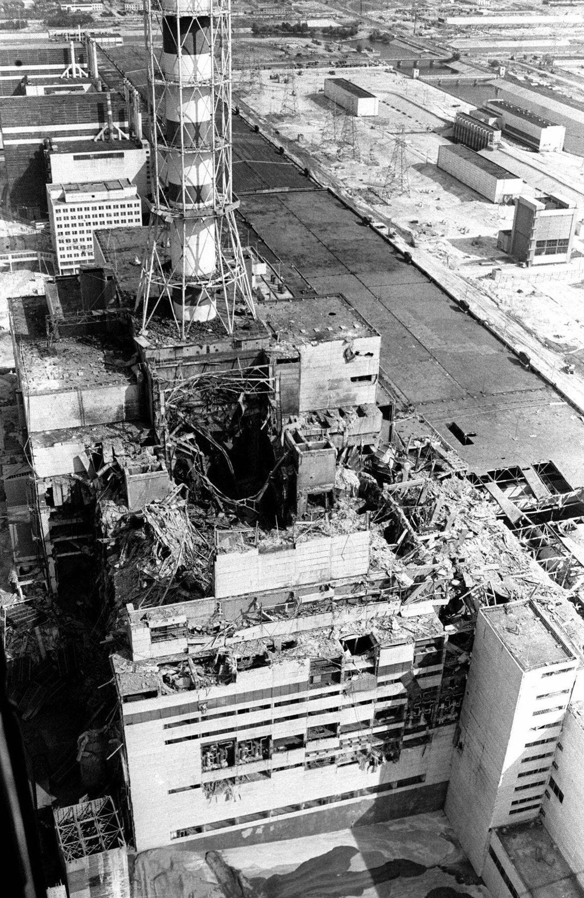

chernobyl
>El accidente de Chernóbil fue una catástrofe nuclear ocurrida el 26 de abril de 1986
en la central Vladimir Ilich Lenin, ubicada en Ucrania (entonces parte de la Unión Soviética).
El desastre sucedió durante una prueba de seguridad en el reactor número cuatro, cuando una combinación
de graves fallos de diseño, errores humanos y violación de protocolos provocó una reacción incontrolabl
>Causas y desarrollo del desastre
- >El detonante:Durante la prueba, los operadores desactivaron los sistemas automáticos y de emergencia.
Al disminuir la potencia del reactor RBMK-1000 a niveles muy inestables, la temperatura y la presión aumentaron
de forma incontrolable, causando una reacción en cadena explosiva.
- > Las explosiones y el incendio: A la 1:23 a. m., dos violentas explosiones volaron la pesada cubierta de acero
y hormigón del reactor, dejando el núcleo expuesto. El grafito del interior se incendió y ardió durante
unos diez días, emitiendo una inmensa columna de humo cargado de partículas altamente radiactivas./li>
- >El secretismo y la evacuación:El gobierno soviético intentó ocultar la magnitud de la catástrofe.
La ciudad más cercana, Prípiat, con casi 50.000 habitantes, no fue evacuada hasta más de 36 horas después del
accidente. La radiación liberada fue unas 400 a 900 veces mayor que la de la bomba atómica de Hiroshima,
extendiéndose por gran parte de Europa
tabla de seguridad
| 0 |
1 |
2 |
3 |
4 |
5 |
6 |
7 |
| desviacion |
anomalia |
incidente |
incidente importante |
accidente sin riesdo fuera del emplazamiento |
accidente con riesgo fuera del emplazamiento |
accidente importante |
accidente grave |
